Ce projet porte sur l'aménagement des combles de L'Ombrelle, à Chablis, transformés en logement. Le volume d'origine conserve sa belle charpente en bois, laissée apparente, qui donne son caractère à l'espace.
Après la reprise du plancher et de la couverture, la chape et le cloisonnement en plaques de plâtre, les combles accueillent un séjour ouvert sur une cuisine équipée et un coin nuit sous les poutres. Des fenêtres de toit apportent la lumière, sur un sol clair qui met en valeur les bois.
- Lieu
- Chablis, Yonne
- Année
- À préciser
- Programme
- Aménagement de combles en logement
- Mission
- À préciser
- Surface
- À préciser
- Statut
- Travaux achevés
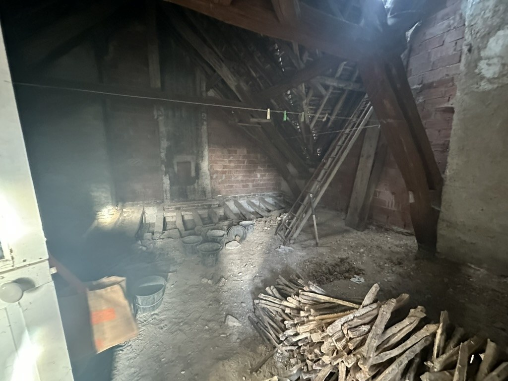
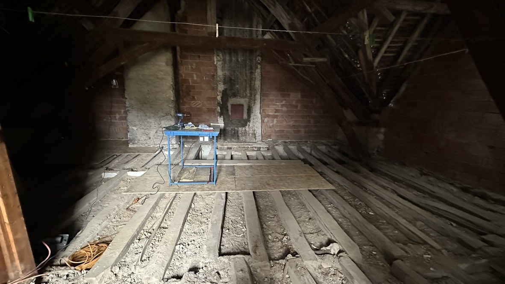
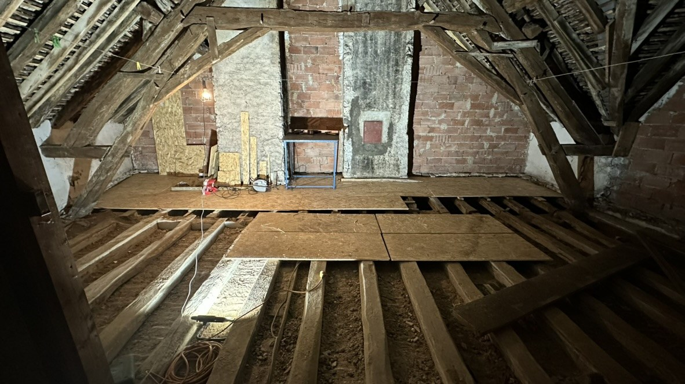
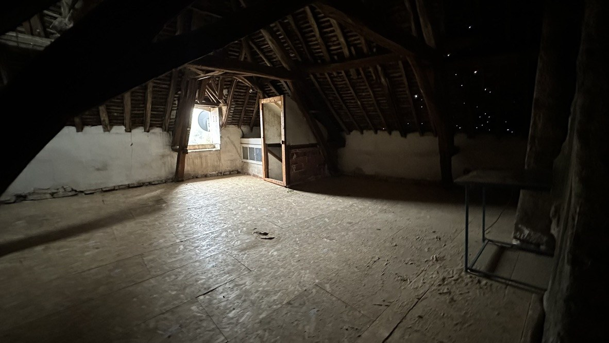
Pendant les travaux
CHANTIER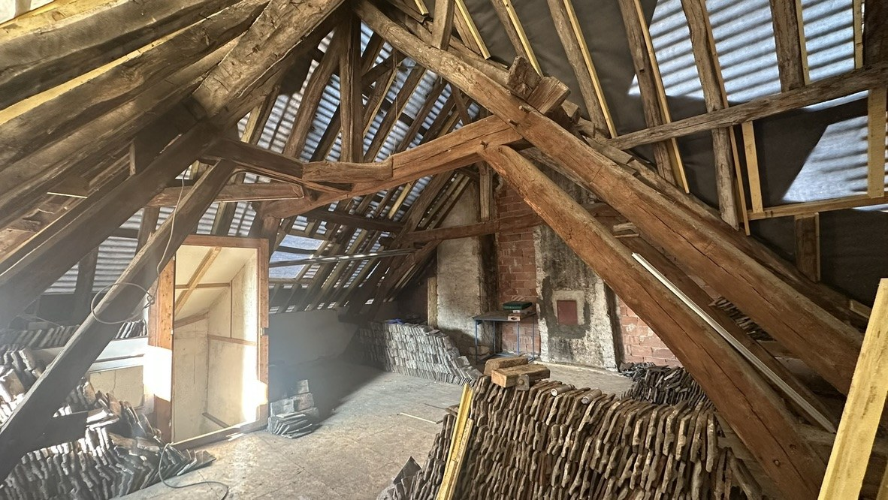
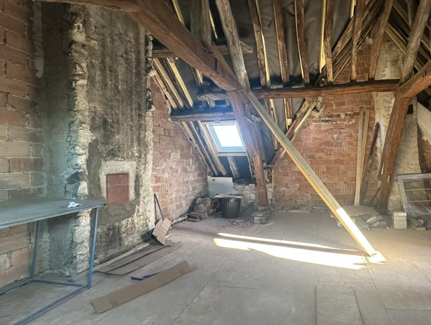
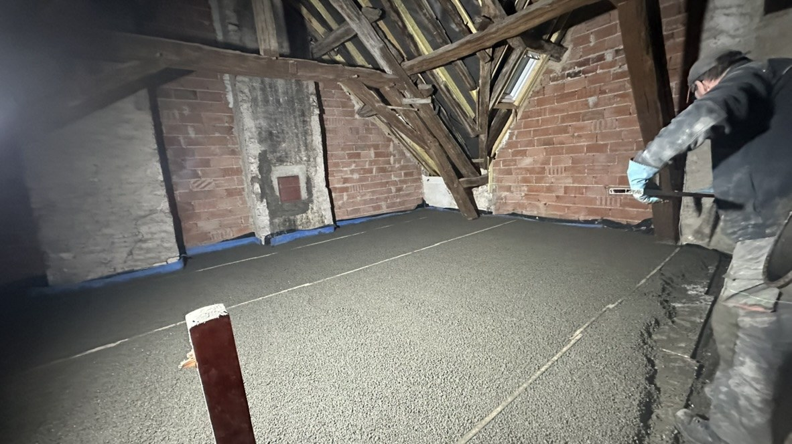
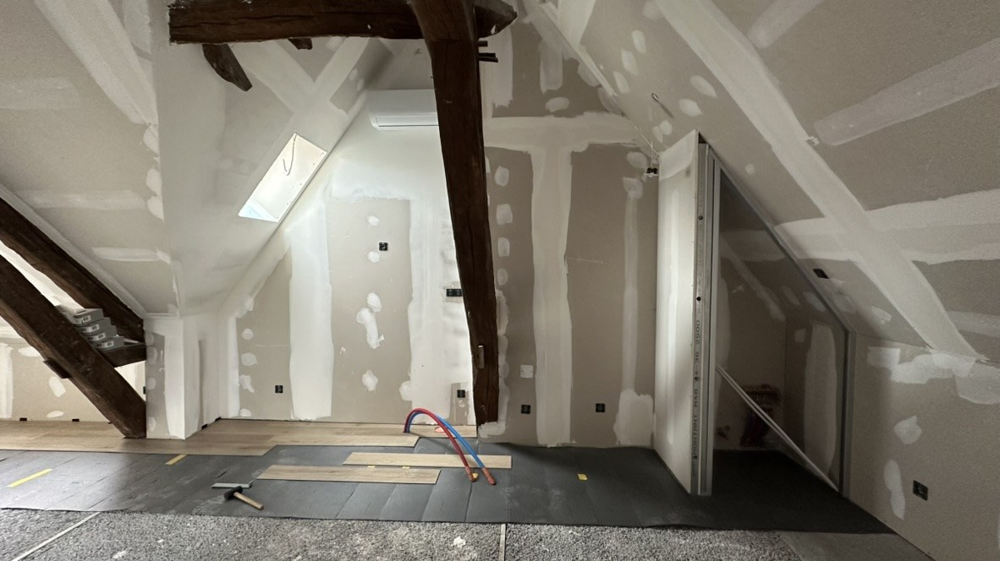
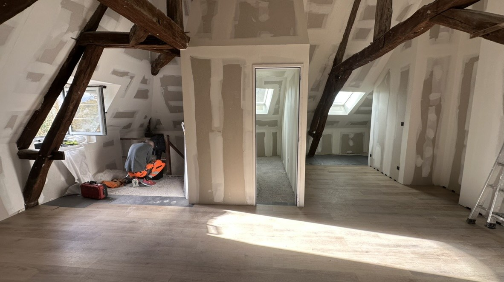
Après travaux
LIVRÉ
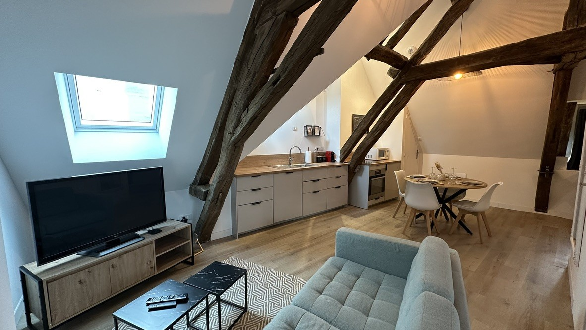
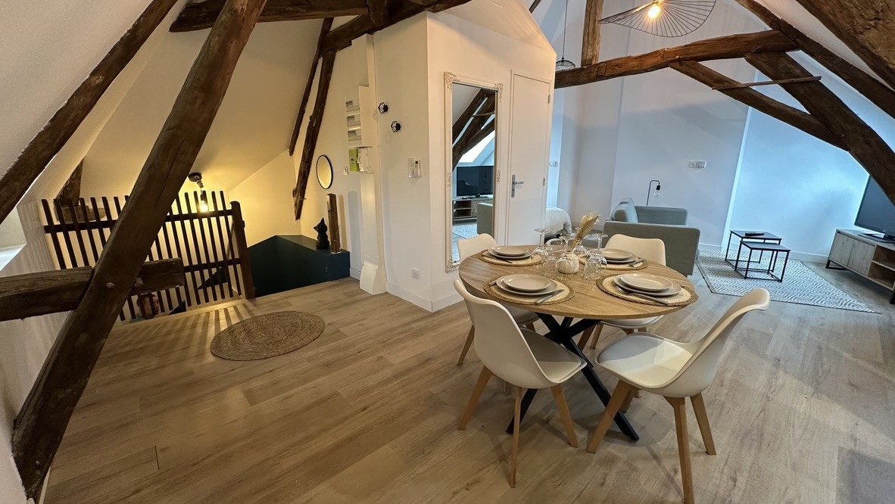
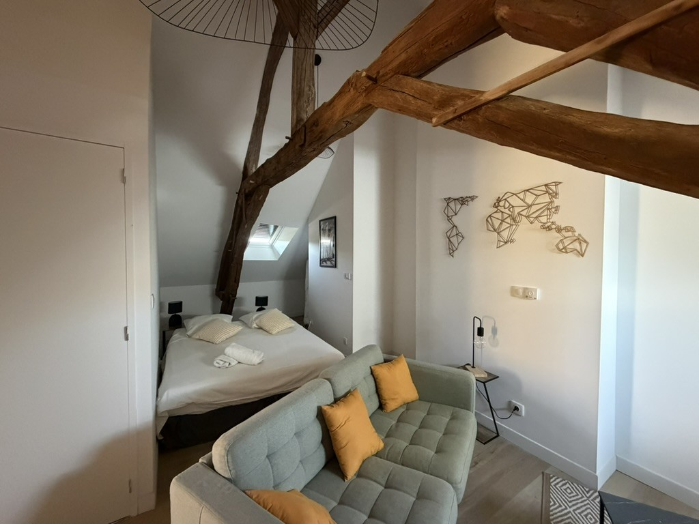
Projet suivant
Pontigny — Corps d'atelier en maison individuelle